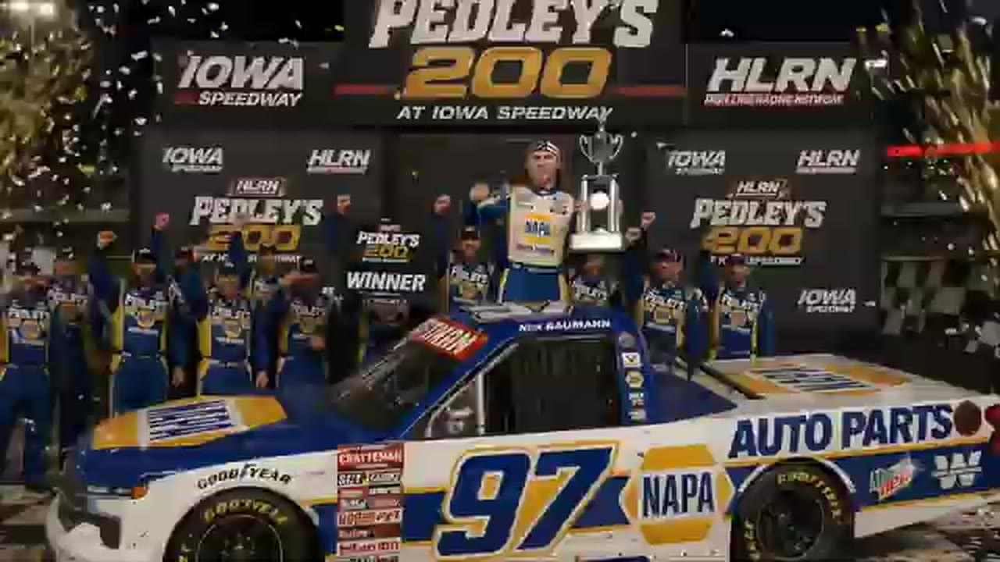

Nick Bowman
Darkhorse Racing
3 RECOVERED WINS / EVERY ONE RECEIPTED
- Official files
- 19
- Central editions
- 11
- Exact tape cues
- 82
- Accepted podiums
- 3
Nick Bowman's accepted HLRN result file contains 3 supported feature wins and 3 recovered podiums: S2 R2 at Iowa (P1); S1 R14 at Richmond (P1); S1 R11 at Charlotte Roval (P1). HLRN materials currently associate the file with Darkhorse Racing. The currently indexed source window runs from November 17, 2025 through July 20, 2026.
The searchable official-broadcast footprint covers 19 race files, with the heaviest repeated track signal at Talladega. 11 Highline Central editions and 82 primary-race jump points connect the result ledger back to the tape. The densest direct-tape categories are restart (21 cues) and battle (12 cues). Those counts describe where the name is easiest to find; they are not fault, pace, or performance grades. A source-attributed car frame is published with its original video and timestamp. That is the current discovery map for Nick Bowman.
No unsupported start total, full points total, car number, or finishing position is added around those receipts. The dossier grows from accepted results and source appearances, not from broadcast-name volume. Separately, 15 Highline Live files sit on the bonus shelf and never enter the official season ledger. The displayed name is labeled transcript normalized; that status remains visible so an owner roster can strengthen or correct the identity without rewriting the evidence trail. Those boundaries define Nick Bowman's public HLRN file.
10 featured race-tape cues
These are discovery routes into complete HLRN broadcasts, not performance grades or inferred results.
- S2 / R2 · RESULT
Nick Bowman is confirmed atop the Iowa results
Nick Bowman takes the checkered after the final restart. The on-screen readout then lists Trevor Haley second and Cory Cook third after Iowa's caution-heavy night.
Iowa - S1 / R11 · RESULT
Nick Bowman is confirmed atop the Charlotte Roval results
The primary Charlotte Roval results record Nick Bowman first, Trevor Haley second, and Jacob Brown third after Bowman's sweep of pole, fastest lap, laps led, the stage, and the win.
Charlotte Roval - S2 / R2 · FINISH
Nick Bowman crosses ahead of Trevor Haley at Iowa
The final Iowa restart resolves with Nick Bowman reaching the checkered ahead of Trevor Haley. The cut stays with the live finish call and its immediate aftermath on the primary tape.
Iowa - S1 / R16 · FINISH
Trevor Haley clears Talladega's final-lap wreck and crosses first
Nick Bowman is turned while making the final-lap move, and Trevor Haley clears the wreck to receive the apparent winner call. This chapter preserves the live finish only; the later disqualification and accepted result remain in the post-race adjudication receipts.
Talladega - S1 / R14 · FINISH
Nick Bowman completes Richmond's final ten-lap charge
Nick Bowman takes the lead after the last restart, begins the final lap at 1:40:19, and receives the live Richmond winner call as John Crosby and Trevor Haley run behind him.
Richmond - S1 / R15 · STAGE
Stage 2 winner call at iRacing Superspeedway
S1 / R15 at 1:27:49: The broadcast enters a stage-scoring discussion at iRacing Superspeedway with Nick Bowman, Trevor Haley, Brandon Showers, and Evan Perry in the scoring call. The clip preserves the on-air timing or points call without promoting it into a complete stage result; the accepted feature result ledger remains separate.
iRacing Superspeedway - S1 / R8 · STAGE
Nick Bowman takes Talladega Stage 1 through an early wreck
Cars begin spinning as lap 20 arrives, but Nick Bowman reaches the Stage 1 line first. The scheduled caution follows while HLRN restarts its timing display and prepares the next pit cycle.
Talladega - S1 / R7 · STAGE
Stage 2 scoring discussion at Michigan
S1 / R7 at 1:15:26: The broadcast enters a stage-scoring discussion at Michigan with Nick Bowman and Matt Brown in the scoring call. The clip preserves the on-air timing or points call without promoting it into a complete stage result; the accepted feature result ledger remains separate.
Michigan - S1 / R6 · STAGE
A stage-scoring discussion at Las Vegas
S1 / R6 at 58:58: The broadcast enters a stage-scoring discussion at Las Vegas with Nick Bowman, Ethan Moreno, Trevor Haley, and Justin Lee Pearson in the scoring call. The clip preserves the on-air timing or points call without promoting it into a complete stage result; the accepted feature result ledger remains separate.
Las Vegas - S1 / R5 · STAGE
Juan Escamilla collects the Watkins Glen stage
The stage-ending caution freezes Juan Escamilla at the scoring line. HLRN awards him the five stage points and reads Jacob Brown, Ricky Miles, Nick Bowman, and Trevor Haley behind him without extending that order to the feature.
Watkins Glen
Recent editions connected to Nick Bowman
Moreno Owns the Chicagoland Closing Run
Nick Bowman led the most laps, but Ethan Moreno pulled clear of Matt Brown and Kyle Cameron when the final lap arrived.
S2 / R2Bowman Outlasts Iowa
Trevor Haley took the stage, but Nick Bowman survived a 23-caution night to beat his teammate and Cory Cook.
S1 / R16Applegate Wins After Haley's DQ
Trevor Haley reached the stripe first, but HLRN's review removed the No. 12 for a below-yellow-line advance and contact, elevating David Applegate.
S1 / R14Richmond Turns Late
Bryson Myers led the most laps and Trevor Haley won another stage, but Nick Bowman owned the final circuit.
S1 / R13Papowell Takes Dover
Trevor Haley and Nick Bowman divided the stages, but Connor Papowell passed into the lead and headed a completely new podium.
S1 / R11Bowman Sweeps the Roval
Pole, fastest lap, most laps led, the lone stage, and the win: Nick Bowman left Charlotte with every major companion stat.
S1 / R8Escamilla Wins Through the Wreck
A last-lap crash split the pack, and Juan Escamilla held Justin Lee Pearson by a nose in the first true photo-finish file of Season 1.
S1 / R7Randy Steals Michigan Late
Trevor Haley and Cory Cook split the stages, but Randy Showers timed the closing run and passed Logan Wilson for his first Highline win.
Complete starts, finishes, and points remain open beyond the recovered results. Name normalization remains reviewable against owner records.